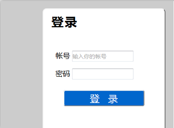
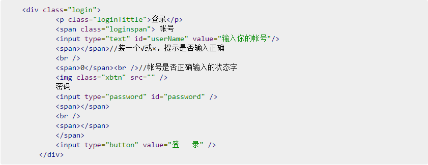
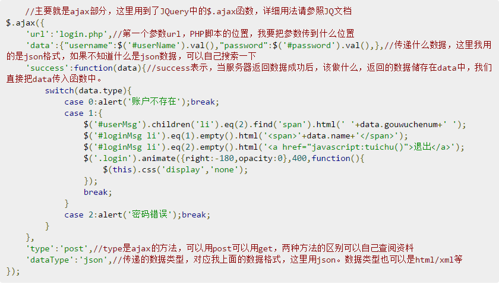
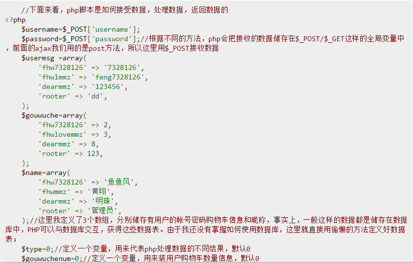
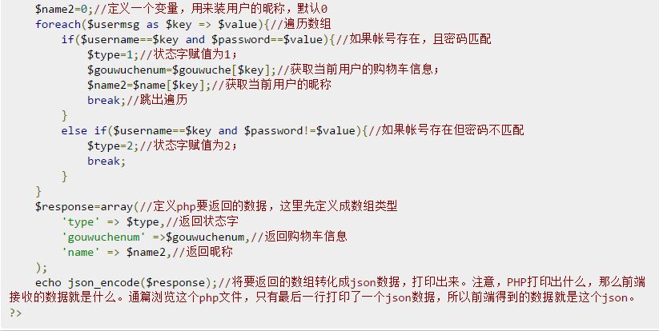
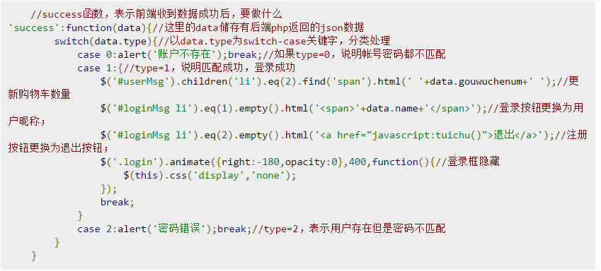

2016/9/21
对应不少初学前端知识的小伙伴来说，如果实现前后端的数据交互，脑袋里很模糊，现在给大家介绍一个简单的案例帮助大家理解。
首先，我们来制作一个登录框，用来输入帐号和密码。
 上述脚本解释了，ajax是如何将前端的数据传送入后台的
 OK，这个php脚本，让大家知道了，后端如何接收数据，处理数据，以及返回数据。
下面，我们返回头来看看，前端接收到数据后是怎么处理的。
好了，到此为止，希望那些不知道ajax的同学们，可以大致了解到ajax是干什么的，php是干什么的。